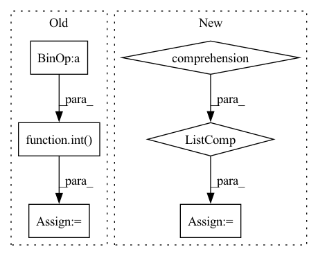

Pattern ID :8046
Before Change
h, w = img_meta["img_shape"][:2]
padded_h = int(
np.ceil(h / self.coarsest_stride) * self.coarsest_stride)
padded_w = int(
np.ceil(w / self.coarsest_stride) * self.coarsest_stride)
padded_img_shapes.append((padded_h, padded_w))
// generate anchors for different feature levels
// len = feature levels
anchor_list = []After Change
anchors = self.anchor_generators[i].grid_anchors(
featmap_sizes[i], self.anchor_strides[i])
multi_level_anchors.append(anchors)
anchor_list = [multi_level_anchors for _ in range(num_imgs)]
// for each image, we compute valid flags of multi level anchors
valid_flag_list = []
for img_id, img_meta in enumerate(img_metas):In pattern: SUPERPATTERN
Frequency: 3
Non-data size: 6
Instances Fragment ID: 28546405
Project Name: wxinlong/solo
Commit Name: 0401cccd2d95eadb83813b6903e5792777f0dea7
Time: 2018-09-25
Author: chenkaidev@gmail.com
File Name: mmdet/models/rpn_heads/rpn_head.py
M Class Name: RPNHead
N Class Name: RPNHead
M Method Name: get_anchors(3)
N Method Name: get_anchors(3)
M Parent Class: nn.Module
N Parent Class: nn.Module
M File Name: mmdet/models/rpn_heads/rpn_head.py
N File Name: mmdet/models/rpn_heads/rpn_head.py
M Start Line: 73
M End Line: 101
N Start Line: 94
N End Line: 121
Before Change
quantiles = self.quantiles
samples = y_pred.size(-1)
quantiles = torch.stack(
[torch.kthvalue(y_pred, int( samples * q) , dim=-1)[0] if samples > 1 else y_pred[..., 0] for q in quantiles],
dim=-1,
)
return quantilesAfter Change
try:
distribution = self.map_x_to_distribution(y_pred)
quantiles = [distribution.icdf(quantile) for quantile in quantiles]
except NotImplementedError: // resort to derive quantiles empirically
samples = torch.sort(self.sample(y_pred, 1000), -1).values
quantiles = torch.quantile(samples, torch.tensor(quantiles), dim=2).permute(1, 2, 0)
return quantiles Fragment ID: 28546408
Project Name: jdb78/pytorch-forecasting
Commit Name: d96465c514b8bf280fae33f0def40fffb62467dd
Time: 2021-04-11
Author: beitner.jan@bcg.com
File Name: pytorch_forecasting/metrics.py
M Class Name: DistributionLoss
N Class Name: DistributionLoss
M Method Name: to_quantiles(3)
N Method Name: to_quantiles(3)
M Parent Class: MultiHorizonMetric
N Parent Class: MultiHorizonMetric
M File Name: pytorch_forecasting/metrics.py
N File Name: pytorch_forecasting/metrics.py
M Start Line: 944
M End Line: 950
N Start Line: 945
N End Line: 953
Before Change
p_bar.update()
_threshold_number = int( _number_all_funds * threshold)
calendar = [date for date in _list_all_date if _list_all_date[date] >= _threshold_number]
return calendar
After Change
if date < oldest_date:
_dict_count_founding[date] -= 1
calendar = [date for date in _dict_count_trade if _dict_count_trade[date] >= max(int(_dict_count_founding[date] * threshold), minimum_count)]
return calendar
Fragment ID: 28546414
Project Name: microsoft/qlib
Commit Name: 11412727ef9089863b88f4d58b332513350cb115
Time: 2021-03-07
Author: zhangdao@buaa.edu.cn
File Name: scripts/data_collector/utils.py
M Class Name: AnonimousClass
N Class Name: AnonimousClass
M Method Name: get_calendar_list_by_ratio(5)
N Method Name: get_calendar_list_by_ratio(4)
M Parent Class:
N Parent Class:
M File Name: scripts/data_collector/utils.py
N File Name: scripts/data_collector/utils.py
M Start Line: 129
M End Line: 147
N Start Line: 108
N End Line: 160